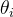

| テスト理論 |
| テスト理論 |
項目パラメータ と
と の値がわかっていれば、項目への正誤パターンから回答者の
の値がわかっていれば、項目への正誤パターンから回答者の の値を推定することができる。
の値を推定することができる。
今、式(99) にもとづき、能力値の回答者が項目 に正答する確率を と書くとすると、項目への反応は、正誤まとめて以下のように表すことができる。
に正答する確率を と書くとすると、項目への反応は、正誤まとめて以下のように表すことができる。
| (100) |
従って、 が与えられたときに各項目への反応が独立であると仮定すると、 項目についてある反応パターン が得られる確率は、
項目についてある反応パターン が得られる確率は、
| (101) |
となる1。
今、ある反応パターンが得られているとき、それが最も得られやすいようなを回答者の能力値と考える、というのは合理的である。 従って、式(101)を最大化するようなを求めればよい。 このとき、式(101)を尤度関数といい、これを最大化するパラメータを求める方法を最尤法という。
式(101) は積でできているので、操作しやすくするために自然対数を取る。 これを最大化するを求めるには、微分して0とおいたものをについて解けばよい。 つまり、
| (102) |
の解が、求めるの推定値である。
Table 13 は、Figure 7に示した3つの項目に対するいくつかの正誤パターンから、実際に能力値を求めたものである。
項目1 |
項目2 |
項目3 |
能力値 |
|
回答者1 |
1 |
0 |
0 |
|
回答者2 |
0 |
1 |
0 |
|
回答者3 |
1 |
1 |
0 |
0.4212 |
回答者4 |
1 |
0 |
1 |
1.6929 |
同じ正答数1問であっても、項目1に正答した方が項目2に正答した場合より能力値が高いと判断される。 これは、識別力の低い項目2に正答することによっては回答者の能力が高いと判断できない代わりに、識別力の高い項目1に正答することは、回答者の正答を高い能力値を反映したものとより確実に考えられるからである。 同じことは2問正答した場合にも当てはまる。
Footnotes
| テスト理論 |